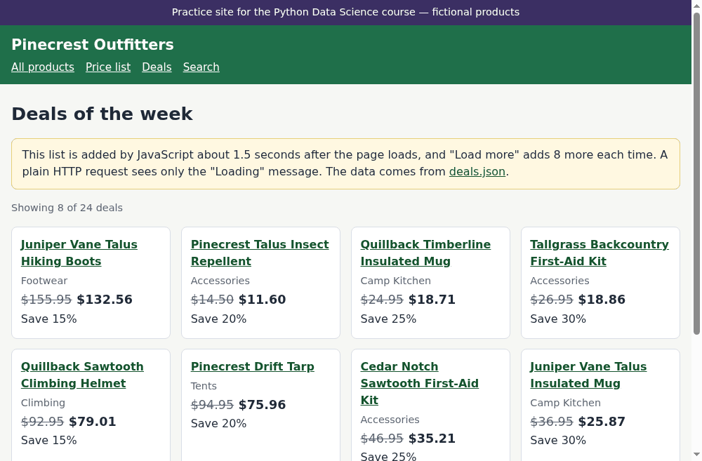

🤖 Lesson 6.3: Dynamic Pages with Selenium
Some pages hand you an empty shell and fill it in afterward. Learn to spot them, to find the data they load, and to drive a real browser from Python when that is truly the only way in.
🎯 Learning Objectives
By the end of this lesson, you will be able to:
- Tell a static page from one that JavaScript fills in, and explain why
requestssees no data on the second kind - Find the JSON a dynamic page loads and use it directly when you can
- Start headless Chrome with Selenium 4, open a page, and locate elements with
Bylocators - Wait for content with
WebDriverWaitand expected conditions instead oftime.sleep() - Click buttons, fill in a form, take a screenshot, and always quit the browser, even after an error
In This Lesson
📦 The Page That Came Back Empty
At the end of Lesson 6.2 one page defeated you. In a browser, the practice shop's Deals page shows a list of discounted products. Through requests, it shows none. Start a new notebook and reproduce the problem, because understanding it is half of this lesson. (Working offline? Serve pinecrest-practice-site.zip as described in Lesson 6.1: unzip it in your project folder, run python -m http.server 8001 there, and set BASE_URL = "http://127.0.0.1:8001/practice/shop/". Selenium loads local pages the same way.)
import re
import time
from urllib.parse import urljoin
import pandas as pd
import requests
from bs4 import BeautifulSoup
pd.set_option("display.width", 150)
pd.set_option("display.max_columns", 20)
BASE_URL = "https://rays-python-datascience.netlify.app/practice/shop/"
USER_AGENT = "pinecrest-course-bot/1.0 (learning project; contact: you@example.com)"
HEADERS = {"User-Agent": USER_AGENT}
DEALS_URL = urljoin(BASE_URL, "deals.html")
resp = requests.get(DEALS_URL, headers=HEADERS, timeout=10)
resp.raise_for_status()
soup = BeautifulSoup(resp.content, "html.parser")
print(len(soup.select("li.deal")), "deals in the HTML")
print(soup.select_one("#loading").get_text())
print(soup.select_one("#deal-list"))Output
0 deals in the HTML
Loading deals…
<ul class="product-grid" id="deal-list"></ul>The request succeeded. The list element is there. It is simply empty, next to a message that says the deals are loading. They never will, in this program.
💡 Mental Model: Flat-Pack Furniture
A static page arrives like a finished bookcase: the server built it, and what comes off the truck is what you see. Every page you scraped in Lesson 6.2 was like that.
A dynamic page arrives flat-packed: a nearly empty frame (the HTML), a bag of parts to be fetched (data files), and an instruction sheet (JavaScript). Your browser does the assembly, after delivery. requests is a delivery driver, not a carpenter. It hands you the box exactly as shipped, and never opens the instructions.
Here is what a browser does with the deals page, step by step:
- It requests
deals.htmland receives the shell you just printed. - The shell names a script,
shop.js. The browser requests that too and runs it. - About a second and a half later, the script requests a data file and builds one list item per deal.
- It removes the "Loading" message. Only now does the page look finished.
You have two honest ways to get that data, and the order in which you try them matters.
⚠️ Same Rules, Bigger Footprint
Everything from Lesson 6.1 still applies: robots.txt, the terms of use, a gentle pace, an honest identity, no logins or paywalls bypassed, no personal data. A browser is also much heavier than requests: each page view downloads the scripts, styles and images too. That is one more reason to reach for it last.
🔍 Look for the Data First
In step 3 above, the page's own script fetched the deals from somewhere. If your program can ask that same "somewhere", you get clean data with one request and no browser at all. So before you automate a browser, spend two minutes finding out what the page loads.
In Your Browser
- Open the Deals page in Chrome. Press F12 (or right-click and choose Inspect) to open the developer tools.
- Click the Network tab, then reload the page.
- Click the Fetch/XHR filter. These are the requests the page's scripts made after it loaded.
- You will see one entry:
deals.json. Click it and look at the Preview or Response pane. There are your deals.
In Python
You can find the same thing by reading the script the page loads. A quick search for calls to fetch(), the browser's way of requesting data, is often enough.
script = requests.get(urljoin(BASE_URL, "shop.js"), headers=HEADERS, timeout=10)
script.raise_for_status()
print(re.findall(r"fetch\('(.+?)'\)", script.text))Output
['deals.json', 'products.json']Two data files. One feeds the deals page and the other feeds the search page. Ask for the first exactly as you asked for JSON in Lesson 6.1.
resp = requests.get(urljoin(BASE_URL, "deals.json"), headers=HEADERS, timeout=10)
resp.raise_for_status()
deals_json = pd.DataFrame(resp.json()["deals"])
print(deals_json.shape)
print(deals_json.head(3))Output
(24, 6)
sku name category price discount_pct deal_price
0 FTW-1013 Juniper Vane Talus Hiking Boots Footwear 155.95 15 132.56
1 ACC-1017 Pinecrest Talus Insect Repellent Accessories 14.50 20 11.60
2 KIT-1003 Quillback Timberline Insulated Mug Camp Kitchen 24.95 25 18.71All 24 deals, already typed, in three lines and a fraction of a second. When a page loads its data from a file or an API that you are allowed to request, that is the best route: faster for you, far lighter for the server, and much less likely to break than anything that depends on the page's layout.
💡 So When Do You Really Need a Browser?
- The data is computed or assembled inside the page, and there is no single request that returns it.
- You must interact to reveal it (click, scroll, choose from menus) and the requests behind those actions are too tangled to reproduce.
- You want what a person sees: a screenshot, a rendered chart, a check that your own web app works.
The rest of this lesson collects the deals the browser way. That is deliberate practice: because you already hold the answer in deals_json, you will be able to check that your browser automation got every row right.
🚀 Starting a Browser from Python
Selenium is a library that controls a real web browser: it opens pages, runs their JavaScript, clicks, types and reads the result, just as you would by hand. It was built for testing websites, which is still its main job.
Selenium talks to the browser through a small helper program called a driver. Selenium 4 includes a tool, Selenium Manager, that finds your installed browser and downloads the matching driver automatically the first time you need it. You only need Chrome itself to be installed. The selenium package came with the course environment in Lesson 0.1.
from selenium import webdriver
from selenium.webdriver.chrome.options import Options
from selenium.webdriver.common.by import By
options = Options()
options.add_argument("--headless=new")
options.add_argument("--window-size=1000,800")
options.add_argument(f"--user-agent={USER_AGENT}")
driver = webdriver.Chrome(options=options)
print(driver.name)Output
chromeThe first run can take half a minute while the driver is downloaded. After that, starting takes about a second. Three options were set:
--headless=newruns Chrome without opening a window. Everything works the same; you just cannot watch. While you are learning, try deleting that line once to see the browser being driven. It is worth the thirty seconds.--window-sizefixes the size of the invisible window, so that pages lay out the same way on every run.--user-agentreplaces the browser's usual identity with yours. An automated browser should say what it is, exactly as yourrequestscode does.
🛑 You Now Own a Running Program
driver is a connection to a real Chrome process on your computer. It keeps running, and using memory, until you call driver.quit(), even if your notebook moves on or your script crashes. This lesson keeps one browser open across several cells and quits it in the Quitting Cleanly section. If you stop partway through, run driver.quit() yourself.
Opening a page is one call. driver.get() loads the URL and returns when the browser reports that the page's own files have finished loading.
driver.get(DEALS_URL)
print(driver.title)
print(driver.current_url)Output
Deals | Pinecrest Outfitters (practice site)
https://rays-python-datascience.netlify.app/practice/shop/deals.html🧭 Finding Elements with By
Selenium finds elements with two methods that mirror what you know from Beautiful Soup. find_element() returns the first match and raises an exception if there is none. find_elements(), plural, returns a list, which may be empty. Each takes a locator: a strategy from the By class and a value.
| Locator | Finds elements by | Example |
|---|---|---|
By.CSS_SELECTOR | A CSS selector, exactly as in Lesson 6.2 | (By.CSS_SELECTOR, "li.deal") |
By.ID | The id attribute | (By.ID, "load-more") |
By.NAME | The name attribute (form fields) | (By.NAME, "max_price") |
By.LINK_TEXT | The exact visible text of a link | (By.LINK_TEXT, "Deals") |
By.XPATH | An XPath expression (a second selector language) | (By.XPATH, "//li[@data-sku]") |
CSS selectors cover nearly everything, and you already know them, so this course uses By.CSS_SELECTOR with By.ID and By.NAME as shortcuts. Now look for the deals, right after loading the page.
driver.get(DEALS_URL)
print(len(driver.find_elements(By.CSS_SELECTOR, "li.deal")), "deals right after get()")
print(driver.find_element(By.ID, "loading").text)Output
0 deals right after get()
Loading deals…Still zero. The browser will run the JavaScript, but your Python code asked before it had finished. driver.get() returned when the page's files were loaded; the deals arrive a second and a half after that. You are now in a race with the page, and you need a way to lose it gracefully.
💡 Old Tutorials Look Different
Selenium 3 code used methods such as find_element_by_css_selector("li.deal") and asked you to download a driver file and pass its path. Both are gone. If an example you find online has find_element_by_ or executable_path in it, it was written for the old version: translate it to find_element(By..., ...) and delete the path.
⏱️ Explicit Waits, Never Sleep
The tempting fix is time.sleep(3). Resist it. A fixed sleep is always wrong in one of two directions. Too short, and on a slow day the content is not there yet, so your script fails at random. Too long, and every page wastes seconds: across a thousand pages, most of an hour. And you cannot know the right number, because it changes with the network, the server and the page.
What you want to say is "wait until the thing I need exists, and give up after a limit". That is an explicit wait.
from selenium.webdriver.support import expected_conditions as EC
from selenium.webdriver.support.ui import WebDriverWait
wait = WebDriverWait(driver, 10)
first_deal = wait.until(EC.presence_of_element_located((By.CSS_SELECTOR, "#deal-list li.deal")))
print(len(driver.find_elements(By.CSS_SELECTOR, "li.deal")), "deals now")
print(driver.find_element(By.ID, "deal-status").text)Output
8 deals now
Showing 8 of 24 dealsRead the middle line as a sentence: wait up to 10 seconds until an element matching this locator is present. Selenium checks twice a second. The moment the condition is true, until() returns the element and your code continues, so you wait exactly as long as the page needs and no longer. If the limit passes first, it raises TimeoutException, a clear error at a time you chose. It is the same idea as the timeout you put on every request.
⚠️ Mind the Double Parentheses
An expected condition takes the locator as one tuple: EC.presence_of_element_located((By.ID, "x")). Leaving out the inner pair is the most common typing error in Selenium code.
The expected_conditions module, imported as EC by convention, has a condition for most situations.
| Condition | True when |
|---|---|
EC.presence_of_element_located(locator) | The element exists in the page |
EC.visibility_of_element_located(locator) | It exists and is displayed |
EC.element_to_be_clickable(locator) | It is displayed and enabled |
EC.invisibility_of_element_located(locator) | It is hidden or gone (a spinner, a "Loading" message) |
EC.text_to_be_present_in_element(locator, text) | The element's text contains text |
EC.url_contains(text) | The address bar contains text |
When none fits, pass your own function. until() calls it with the driver, again and again, until it returns something true. You will use that in a moment to wait for a count to change.
✅ One Rule Covers Almost Everything
Before you read or click anything that JavaScript might still be building, wait for it by name. If you ever feel the urge to add a sleep "just to be safe", ask what you are really waiting for, and wait for that instead.
📖 Reading the Page
first_deal is a WebElement: a handle on a live element in the browser. Its .text is the text a person would see, get_attribute() reads an attribute, and you can search inside it just as you searched inside a Beautiful Soup tag.
print(first_deal.text)
print("---")
print(first_deal.get_attribute("data-sku"))
link = first_deal.find_element(By.CSS_SELECTOR, ".product-name a")
print(link.text)
print(link.get_attribute("href"))
print(first_deal.find_element(By.CSS_SELECTOR, "span.deal-price").text)Output
Juniper Vane Talus Hiking Boots
Footwear
$155.95$132.56
Save 15%
---
FTW-1013
Juniper Vane Talus Hiking Boots
https://rays-python-datascience.netlify.app/practice/shop/products/FTW-1013.html
$132.56One pleasant difference from Beautiful Soup: the browser has already resolved the link, so href comes back as a full URL.
Hand the Finished Page to Beautiful Soup
You could build each row with a dozen find_element() calls. There is a neater division of labor. Every one of those calls is a round trip from Python to the browser. Instead, let Selenium do what only a browser can (run the JavaScript, wait, click) and then take the finished HTML from driver.page_source and parse it with the tools you practiced in Lesson 6.2.
def parse_deals(html):
"""Parse the deal cards in a rendered deals page into a DataFrame."""
soup = BeautifulSoup(html, "html.parser")
rows = []
for li in soup.select("#deal-list li.deal"):
rows.append({
"sku": li["data-sku"],
"name": li.select_one(".product-name a").get_text(strip=True),
"category": li.select_one("p.product-category").get_text(strip=True),
"price": float(li.select_one("s.was").get_text().lstrip("$")),
"deal_price": float(li.select_one("span.deal-price").get_text().lstrip("$")),
"discount_pct": int(re.search(r"\d+", li.select_one("p.discount").get_text()).group()),
})
return pd.DataFrame(rows)
page_deals = parse_deals(driver.page_source)
print(page_deals)Output
sku name category price deal_price discount_pct
0 FTW-1013 Juniper Vane Talus Hiking Boots Footwear 155.95 132.56 15
1 ACC-1017 Pinecrest Talus Insect Repellent Accessories 14.50 11.60 20
2 KIT-1003 Quillback Timberline Insulated Mug Camp Kitchen 24.95 18.71 25
3 ACC-1006 Tallgrass Backcountry First-Aid Kit Accessories 26.95 18.86 30
4 CLM-1002 Quillback Sawtooth Climbing Helmet Climbing 92.95 79.01 15
5 TNT-1023 Pinecrest Drift Tarp Tents 94.95 75.96 20
6 ACC-1015 Cedar Notch Sawtooth First-Aid Kit Accessories 46.95 35.21 25
7 KIT-1019 Juniper Vane Talus Insulated Mug Camp Kitchen 36.95 25.87 30page_source is the page as it is now, after the scripts have run, which is why this soup has deals in it and the one at the top of the lesson did not. The function takes HTML and returns a DataFrame; it neither knows nor cares that a browser produced the HTML. That separation makes it easy to test.
🖱️ Clicking: Load More
The page shows 8 of 24 deals. A person would click Load more until the button disappears. So will you, with one wait per click: after clicking, wait until the number of deals on the page is larger than it was before.
load_more = driver.find_element(By.ID, "load-more")
while load_more.is_displayed():
shown = len(driver.find_elements(By.CSS_SELECTOR, "li.deal"))
load_more.click()
wait.until(lambda d: len(d.find_elements(By.CSS_SELECTOR, "li.deal")) > shown)
print(driver.find_element(By.ID, "deal-status").text)Output
Showing 16 of 24 deals
Showing 24 of 24 dealsThe lambda is the custom condition promised earlier: a tiny function that receives the driver and returns True once more deals are on the page than before the click. Without that wait the loop would click several times before the first batch arrived. With it, the loop moves at exactly the page's pace, and stops when the page hides the button.
Now parse the complete page and check it against the data file you fetched at the start.
all_deals = parse_deals(driver.page_source)
print(all_deals.shape)
print("same as deals.json:", all_deals.equals(deals_json[all_deals.columns]))Output
(24, 6)
same as deals.json: TrueTwenty-four rows, identical to the JSON in every value. The browser route works. Notice what it cost, though: a browser, two clicks, three waits and a parser, to arrive where one requests.get() had already taken you. Keep that comparison in mind whenever you choose between the two.
📝 Filling In a Form
The shop's Search page has a form: a text box, a category menu, a maximum price and a checkbox. Its results are also filled in by JavaScript, and the page marks its list with data-loaded="true" when it has finished. That attribute is a gift: it is something precise to wait for.
from selenium.webdriver.support.ui import Select
results_ready = EC.presence_of_element_located((By.CSS_SELECTOR, '#search-results[data-loaded="true"]'))
driver.get(urljoin(BASE_URL, "search.html"))
wait.until(results_ready)
print(driver.find_element(By.ID, "search-count").text)Output
242 products foundWith no filters the page reports the whole catalog. Now fill in the form the way a person would. Form fields are easiest to find by their name attribute.
driver.find_element(By.NAME, "q").send_keys("tent")
Select(driver.find_element(By.NAME, "category")).select_by_visible_text("Tents")
driver.find_element(By.NAME, "max_price").send_keys("300")
driver.find_element(By.NAME, "in_stock").click()
driver.find_element(By.CSS_SELECTOR, "#search-form button[type='submit']").click()
wait.until(EC.url_contains("q=tent"))
wait.until(results_ready)
print(driver.current_url)
print(driver.find_element(By.ID, "search-count").text)
for item in driver.find_elements(By.CSS_SELECTOR, "#search-results li")[:3]:
print(item.get_attribute("data-sku"), item.find_element(By.CSS_SELECTOR, "h2 a").text)Output
https://rays-python-datascience.netlify.app/practice/shop/search.html?q=tent&category=Tents&max_price=300&in_stock=1
9 products found
TNT-1001 Granite Fork Drift 1-Person Tent
TNT-1002 Cedar Notch Ridgeline 2-Person Tent
TNT-1004 Wrenfield Skyline 4-Person TentFour kinds of input, four small techniques:
send_keys()types into a text or number box.Selectwraps a drop-down menu so that you can choose an option by its visible text.click()ticks a checkbox and presses a button.- Submitting loads a new page, so there are two waits: first for the address to change, then for the new page's results. Waiting only for the results could succeed instantly on the old page.
The Address Bar Is Telling You Something
Look at the URL after submitting: the form's values are right there as query parameters. This form uses GET, so filling it in is just a slow way of building a URL. You can build it yourself and skip the typing.
from urllib.parse import urlencode
query = urlencode({"q": "boots", "max_price": 150, "in_stock": 1})
driver.get(urljoin(BASE_URL, "search.html") + "?" + query)
wait.until(results_ready)
print(driver.current_url)
print(driver.find_element(By.ID, "search-count").text)Output
https://rays-python-datascience.netlify.app/practice/shop/search.html?q=boots&max_price=150&in_stock=1
1 product foundSame result, one step. (And you already know where this page gets its data: products.json, the other file in the script. Exercise 4 closes that loop.) Reading the address bar, like reading the Network tab, is part of looking before you automate.
📸 Screenshots
A headless browser is invisible, which is unnerving when something goes wrong. A screenshot shows you what the browser "saw" at that moment. It is the first thing to reach for when a wait times out, and a useful record to keep next to scraped data.
driver.get(DEALS_URL)
wait.until(EC.visibility_of_element_located((By.CSS_SELECTOR, "#deal-list li.deal")))
saved = driver.save_screenshot("deals.png")
print(saved)Output
True
save_screenshot() captures the visible window (the size you set in the options) and returns True when the file was written. Open deals.png from your project folder to see your own.
🚪 Quitting Cleanly
You have had a browser running for this whole lesson. Close it.
driver.quit()
print("browser closed")Output
browser closedquit() ends the browser and its driver. (There is also close(), which closes only the current window and can leave the process running. Use quit().) If a script crashes before reaching that line, the browser is orphaned: it stays in memory, invisible if it is headless, until you find it in your task manager. Do that a few times in an afternoon and your computer slows to a crawl.
The cure is the same one you use for files and database connections: guarantee the cleanup. Put the setup in one function and wrap the work in try / finally.
def make_driver(headless=True):
"""Start Chrome with this course's settings. Whoever calls this must quit it."""
options = Options()
if headless:
options.add_argument("--headless=new")
options.add_argument("--window-size=1000,800")
options.add_argument(f"--user-agent={USER_AGENT}")
return webdriver.Chrome(options=options)
driver = make_driver()
try:
driver.get(DEALS_URL)
WebDriverWait(driver, 10).until(EC.presence_of_element_located((By.CSS_SELECTOR, "li.deal")))
print(driver.find_element(By.ID, "deal-status").text)
finally:
driver.quit()
print("browser closed")Output
Showing 8 of 24 deals
browser closedThe finally block runs whether the try block finishes, raises an error, or is interrupted with Ctrl+C. From here on, every browser in this lesson is opened and closed this way. Call make_driver(headless=False) any time you want to watch.
⚠️ Common Mistakes
Selenium's error messages come with a long, unhelpful stack trace from inside the browser driver. The first line is the one to read. The examples below print just that line.
from selenium.common.exceptions import (NoSuchElementException,
StaleElementReferenceException,
TimeoutException)
driver = make_driver()
driver.get(DEALS_URL)1. Looking Before the Page Is Ready
try:
driver.find_element(By.CSS_SELECTOR, "li.deal")
except NoSuchElementException as err:
print(type(err).__name__)
print(err.msg.splitlines()[0])Error
NoSuchElementException
no such element: Unable to locate element: {"method":"css selector","selector":"li.deal"}What it means: at the instant you asked, no such element existed. On a dynamic page that usually means "not yet". Fix: WebDriverWait(driver, 10).until(EC.presence_of_element_located(...)). If it still fails after a wait, see the next mistake.
2. Waiting for Something That Will Never Come
try:
WebDriverWait(driver, 3).until(
EC.presence_of_element_located((By.CSS_SELECTOR, "li.deals")),
message="no li.deals after 3 seconds")
except TimeoutException as err:
print(type(err).__name__)
print(err.msg)Error
TimeoutException
no li.deals after 3 secondsWhat it means: the condition never became true. Here the selector has a typo (li.deals for li.deal), so no amount of waiting would help. Fix: give every wait a message so the error says what you were waiting for, take a screenshot when one fires, and test the selector in the browser's developer tools.
3. Holding On to an Element After the Page Changed
status = WebDriverWait(driver, 10).until(
EC.visibility_of_element_located((By.ID, "deal-status")))
driver.refresh()
try:
print(status.text)
except StaleElementReferenceException as err:
print(type(err).__name__)
print(err.msg.splitlines()[0])Error (the exact wording may differ with your Chrome version)
StaleElementReferenceException
stale element reference: stale element not foundWhat it means: a WebElement is a handle on one element in one loaded page. After a reload, a navigation, or a script that rebuilds that part of the page, the handle points at nothing. Fix: find the element again after anything that changes the page. Do not store elements for later; store the data you read from them.
4. Using Selenium 3 Methods
driver.find_element_by_id("deal-status")Error
AttributeError: 'WebDriver' object has no attribute 'find_element_by_id'What it means: the find_element_by_... family was removed in Selenium 4. Fix: driver.find_element(By.ID, "deal-status").
driver.quit()5. Leaving Browsers Running
There is no error message for this one, only a slow computer and a task manager full of Chrome processes. Fix: try / finally with driver.quit(), every time, as in the previous section. That is why this section's own browser was closed in the cell above.
6. Chrome Is Not Installed
If webdriver.Chrome() fails with NoSuchDriverException or a message that it cannot find the browser, Selenium Manager could not locate Chrome, or could not reach the internet to download the driver. Fix: install Chrome and try again while online. If you prefer another browser, webdriver.Firefox() and webdriver.Edge() work the same way with their own Options classes.
🛠️ Project: Deals Watch
Pinecrest's marketing team wants a weekly record of what the Deals page showed customers: every deal, a screenshot as evidence, and a few checks that the page is not advertising something silly. You will build it the careful way, collecting the deals with a browser and verifying them against the page's data file. Continue in your lesson notebook, where make_driver() and parse_deals() are defined. Allow about 30 minutes.
🛠️ Step 1: Get the answer key (3 min)
Data first. Fetch deals.json with requests and time it. This is what the browser's result will be checked against.
t0 = time.perf_counter()
resp = requests.get(urljoin(BASE_URL, "deals.json"), headers=HEADERS, timeout=10)
resp.raise_for_status()
expected = pd.DataFrame(resp.json()["deals"])
json_seconds = time.perf_counter() - t0
print(expected.shape)Output
(24, 6)🛠️ Step 2: Write collect_deals() (12 min)
One function does the whole browser job: open the page, wait for the first deals, click Load more until it is gone, take a screenshot, and return the parsed table. The browser is quit in finally, whatever happens.
def collect_deals(screenshot_path="deals_full.png"):
"""Collect every deal from the rendered deals page. Returns a DataFrame."""
driver = make_driver()
try:
wait = WebDriverWait(driver, 10)
driver.get(DEALS_URL)
wait.until(EC.presence_of_element_located((By.CSS_SELECTOR, "#deal-list li.deal")),
message="the first deals did not appear")
load_more = driver.find_element(By.ID, "load-more")
clicks = 0
while load_more.is_displayed() and clicks < 20:
shown = len(driver.find_elements(By.CSS_SELECTOR, "li.deal"))
load_more.click()
clicks += 1
wait.until(lambda d: len(d.find_elements(By.CSS_SELECTOR, "li.deal")) > shown,
message="no new deals after clicking Load more")
driver.save_screenshot(screenshot_path)
return parse_deals(driver.page_source)
finally:
driver.quit()
t0 = time.perf_counter()
deals = collect_deals()
browser_seconds = time.perf_counter() - t0
print(deals.shape)
print(deals.tail(3))Output
(24, 6)
sku name category price deal_price discount_pct
21 SLP-1010 Larkspur Ridge Canyon Sleeping Pad Sleeping 111.95 89.56 20
22 SNW-1014 Pinecrest Ridgeline Hand Warmers 10-Pack Snow 11.50 8.62 25
23 CLM-1013 Larkspur Ridge Mesa Belay Device Climbing 81.95 57.36 30The clicks < 20 limit is the same seat belt as max_pages in Lesson 6.2: if the button never disappeared, the loop would still end.
🛠️ Step 3: Verify (5 min)
Compare the browser's table with the answer key, and check the page's arithmetic: is each deal price really the list price less the advertised percentage?
print("matches deals.json:", deals.equals(expected[deals.columns]))
print("unique SKUs:", deals["sku"].is_unique)
computed = (deals["price"] * (1 - deals["discount_pct"] / 100)).round(2)
off_by = (computed - deals["deal_price"]).abs()
print("largest difference from the advertised discount:", off_by.max().round(2))Output
matches deals.json: True
unique SKUs: True
largest difference from the advertised discount: 0.01The browser's table equals the data file, and every deal price is within one cent of the advertised percentage. The cent is rounding: a quarter off $24.95 is $18.7125, and the shop has to pick a side.
🛠️ Step 4: Ask a business question (5 min)
A deal on something customers cannot buy is an annoyance, not a promotion. Join the deals to the product table, confirm that none is out of stock, and list the ones that are running low. Then find where the biggest savings in dollars are.
catalog = pd.read_csv("data/products.csv")[["sku", "stock_status", "rating"]]
watch = deals.merge(catalog, on="sku", how="left")
watch["saving"] = (watch["price"] - watch["deal_price"]).round(2)
print(watch["stock_status"].value_counts().to_dict())
print(watch.loc[watch["stock_status"] == "low_stock", ["sku", "name", "discount_pct"]])
print()
print(watch.nlargest(3, "saving")[["name", "price", "deal_price", "saving"]])Output
{'in_stock': 21, 'low_stock': 3}
sku name discount_pct
10 CLM-1005 Larkspur Ridge Mesa Chalk Bag 25
18 ACC-1020 Wrenfield Meadow Lantern 25
19 FTW-1001 Juniper Vane Wayfinder Hiking Boots 30
name price deal_price saving
19 Juniper Vane Wayfinder Hiking Boots 259.95 181.96 77.99
14 Juniper Vane Tundra Sleeping Pad 173.95 130.46 43.49
11 Tallgrass Switchback 30L Daypack 109.95 76.97 32.98🛠️ Step 5: Save, and compare the two routes (5 min)
watch.to_csv("deals_watch.csv", index=False)
print(f"JSON route : {json_seconds:6.2f} s, 1 request")
print(f"browser route: {browser_seconds:6.2f} s, a browser, 2 clicks, 3 waits")Output (your times will differ)
JSON route : 0.00 s, 1 request
browser route: 4.27 s, a browser, 2 clicks, 3 waitsBoth routes produced the same 24 rows. One of them is many times faster and asks far less of the server. For a weekly job you would schedule the JSON request, and keep the browser version for the screenshot and for the day the data file moves.
✅ Project Completion Checklist
- You fetched
deals.jsonfirst and kept it as the answer key collect_deals()uses explicit waits with messages and contains notime.sleep()- The browser is quit in a
finallyblock, and the click loop has a limit - The browser's 24 rows equal the JSON's 24 rows
deals_full.pnganddeals_watch.csvare saved in your project folder- You can name the low-stock deals and the three largest dollar savings
🏋️ Hands-on Exercises
Each solution opens its own browser with make_driver() and closes it in finally. Build that habit here.
🏋️ Exercise 1: Wait for the Words
Open the deals page and wait until the status line (#deal-status) contains the text of 24 deals, using EC.text_to_be_present_in_element. Then print the status line and the number of li.deal elements.
💡 Hint
The condition takes two arguments: a locator tuple and the text. wait.until(EC.text_to_be_present_in_element((By.ID, "deal-status"), "of 24 deals")).
✅ Solution
driver = make_driver()
try:
driver.get(DEALS_URL)
WebDriverWait(driver, 10).until(
EC.text_to_be_present_in_element((By.ID, "deal-status"), "of 24 deals"))
print(driver.find_element(By.ID, "deal-status").text)
print(len(driver.find_elements(By.CSS_SELECTOR, "li.deal")))
finally:
driver.quit()Output
Showing 8 of 24 deals
8Waiting for the status text and waiting for the first list item are two ways of saying "the script has finished". Pick the signal that is closest to what you are about to read.
🏋️ Exercise 2: Search by URL
Without touching the form, load the search page for products whose name contains jacket, in the Apparel category, with a maximum price of 200. Print the result count and the SKU and name of every result.
💡 Hint
Build the query string with urlencode({...}) using the field names q, category and max_price. Wait for #search-results[data-loaded="true"].
✅ Solution
query = urlencode({"q": "jacket", "category": "Apparel", "max_price": 200})
driver = make_driver()
try:
driver.get(urljoin(BASE_URL, "search.html") + "?" + query)
WebDriverWait(driver, 10).until(results_ready)
print(driver.find_element(By.ID, "search-count").text)
for item in driver.find_elements(By.CSS_SELECTOR, "#search-results li"):
print(item.get_attribute("data-sku"), item.find_element(By.CSS_SELECTOR, "h2 a").text)
finally:
driver.quit()Output
2 products found
APL-1010 Tallgrass Drift Rain Jacket
APL-1028 Cedar Notch Cairn Rain Jacket🏋️ Exercise 3: The Form, the Human Way
Now do a search through the form: open search.html, choose the category Snow from the menu, tick Hide out of stock, and submit. Print the final URL and the result count. Remember that submitting loads a new page.
💡 Hint
Wait for the results once before filling in the form and twice after submitting: EC.url_contains("category=Snow"), then results_ready.
✅ Solution
driver = make_driver()
try:
wait = WebDriverWait(driver, 10)
driver.get(urljoin(BASE_URL, "search.html"))
wait.until(results_ready)
Select(driver.find_element(By.NAME, "category")).select_by_visible_text("Snow")
driver.find_element(By.NAME, "in_stock").click()
driver.find_element(By.CSS_SELECTOR, "#search-form button[type='submit']").click()
wait.until(EC.url_contains("category=Snow"))
wait.until(results_ready)
print(driver.current_url)
print(driver.find_element(By.ID, "search-count").text)
finally:
driver.quit()Output
https://rays-python-datascience.netlify.app/practice/shop/search.html?q=&category=Snow&max_price=&in_stock=1
20 products foundThe form sent the empty text boxes too (q= and max_price=), exactly as a browser does for a person.
🏋️ Exercise 4: No Browser at All (Stretch)
The search page filters products.json inside the browser. Reproduce the lesson's search (name contains "tent", category Tents, price at most 300, not out of stock) with requests and pandas only. You should find the same 9 products the browser found. Which version would you rather maintain?
💡 Hint
Load products.json into a DataFrame from its "products" key. Combine four boolean conditions with &; .str.contains("tent", case=False) handles the name.
✅ Solution
resp = requests.get(urljoin(BASE_URL, "products.json"), headers=HEADERS, timeout=10)
resp.raise_for_status()
shop = pd.DataFrame(resp.json()["products"])
hits = shop[shop["name"].str.contains("tent", case=False)
& (shop["category"] == "Tents")
& (shop["price"] <= 300)
& (shop["stock_status"] != "out_of_stock")]
print(len(hits), "products found")
print(hits[["sku", "name", "price"]].head(3))Output
9 products found
sku name price
0 TNT-1001 Granite Fork Drift 1-Person Tent 299.95
1 TNT-1002 Cedar Notch Ridgeline 2-Person Tent 217.95
3 TNT-1004 Wrenfield Skyline 4-Person Tent 294.95The same nine, starting with the same three, with no browser, no waits and no form. This is the question to ask of every dynamic page: where does the data come from, and may I ask for it directly?
🎯 Quick Quiz
🎯 Check Your Understanding
Question 1: You fetch the deals page with requests and Beautiful Soup finds zero li.deal elements, although your browser shows 8. What is the explanation?
Question 2: Why is WebDriverWait(driver, 10).until(...) better than time.sleep(10) before reading dynamic content?
Question 3: A page has no elements matching li.gone. What do these two calls do: driver.find_elements(By.CSS_SELECTOR, "li.gone") and driver.find_element(By.CSS_SELECTOR, "li.gone")?
Question 4: In the browser's Network tab you see that a page fills its table from /api/prices.json, and the site's rules allow programs to request it. What is the best way to collect the table every day?
Question 5: A script creates a headless browser with webdriver.Chrome() and then crashes with an error before reaching driver.quit(). What happens to the browser?
❓ Common Questions at This Stage
What about implicit waits? I saw driver.implicitly_wait(10) in a tutorial.
An implicit wait tells every find_element() call to keep retrying for up to that long. It is simple, but blunt: it only covers "the element exists", not "it is visible" or "the text changed", and it makes genuinely missing elements slow to report. Selenium's own documentation warns against mixing implicit and explicit waits because the combined timing is unpredictable. Explicit waits say precisely what you are waiting for, so this course uses only those.
Is Selenium the only tool for this? What is Playwright?
Playwright is a newer browser automation library with the same purpose and a similar shape: start a browser, go to a page, locate, wait, click. It waits automatically in more situations and is popular for testing. Selenium is the long-established standard with the widest language and browser support. The ideas in this lesson (rendering, locators, waiting for conditions, cleaning up) carry over to either.
Some sites show a CAPTCHA or block automated browsers. How do I get past that?
You do not. A CAPTCHA or a block is the site telling automated visitors no, which is rule 5 from Lesson 6.1. Tools and tricks that hide automation exist, and using them means deliberately defeating a site's stated wishes. Look for an official API or a data download, or ask the owner for access.
Can I use Selenium for pages behind my own login?
Technically yes: you can type into a login form like any other. Do it only for accounts that are yours, on sites whose terms allow automated access, and never put the password in your code. Lesson 6.4 shows how to keep secrets out of code, and shows the better route when a service offers one: an API with a key or token.
Does this work in a script as well as in a notebook?
Yes, and scripts are where try / finally matters most, because nobody is watching. In a notebook it is convenient to keep one browser open across cells while you explore, as this lesson did. Just make closing it the last thing you do.
🌟 Going Further: Bonus Challenge
Make collect_deals() explain its own failures. Wrap the waits so that when a TimeoutException occurs, the function saves a screenshot named failure.png and the current page_source to failure.html before re-raising the error. Test it by temporarily changing a selector to something that does not exist. Then open the two files and see how much faster they make the diagnosis.
📓 Learning Journal
Take five minutes to write in your learning journal (the journal.md file you started in Lesson 0.1, or a paper notebook). Jot down:
- Key concepts you learned today
- Techniques that clicked (and the ones that have not, yet)
- Questions or confusion to come back to
- Ideas to try on your own
- Progress and feelings: how did this lesson go for you?
✍️ This lesson's prompt: Explain the flat-pack furniture picture in your own words: what does requests receive, and what does a browser do next? Then write down your own three-question checklist for a page that looks empty to requests, in the order you would try things, and why that order.
📝 Lesson Summary
🎓 Key Takeaways
- A dynamic page is a shell that JavaScript fills in after loading;
requestsgets the shell only - Look for the data first: the Network tab and the page's scripts often reveal a JSON file or API you can request directly
- Selenium 4 drives a real browser; Selenium Manager fetches the driver, and
--headless=newhides the window - Locate with
find_element(By.CSS_SELECTOR, ...); the pluralfind_elementsreturns a list and never raises - Wait for conditions, never sleep:
WebDriverWait(driver, 10).until(EC....)or your own function - Let the browser render and click, then parse
driver.page_sourcewith Beautiful Soup - A
WebElementgoes stale when the page changes: find it again - Always
driver.quit()in afinallyblock
🏆 What You've Accomplished
- You diagnosed why a page looked empty and found the data file behind it
- You drove headless Chrome from Python: opened pages, waited, clicked, typed, chose from a menu and submitted a form
- You collected all 24 deals through the browser and proved they match the source data
- You took a screenshot of what an invisible browser saw
- You measured the cost of the browser route against the direct one and can now choose between them on evidence
🔭 Looking Ahead
In Lesson 6.4: API Authentication you will go through the front door. Many of the most useful data sources are APIs that want to know who is asking. You will use the practice API from Lesson 6.1 with an API key and with a login token that expires, keep those secrets out of your code, and page through more than a thousand orders into a DataFrame.
📋 Before the Next Lesson
- Check that no stray browsers are running: every
make_driver()should have met itsquit(). - Find the terminal command that starts the practice API in Lesson 6.1 and make sure it still runs:
python data/mock_api.py. - Pick one website you use and open its Network tab while it loads. You do not need to scrape anything. Just notice how much of what you see arrives as JSON.
🌱 Encouragement for the Journey
Browser automation has a reputation for being fiddly, and you have just seen why: you are coordinating with a program that works on its own schedule. You also learned the one habit that removes most of the pain, which is to wait for what you need by name. If a wait timed out on you today, that was not failure. That was the tool doing its job and telling you something true about the page. Take the screenshot, read the first line, adjust.